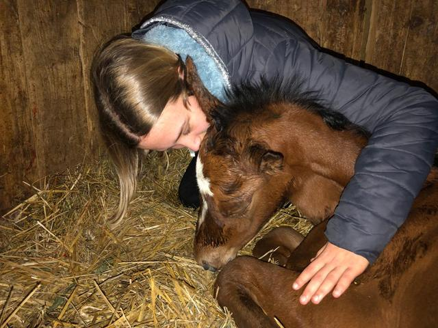
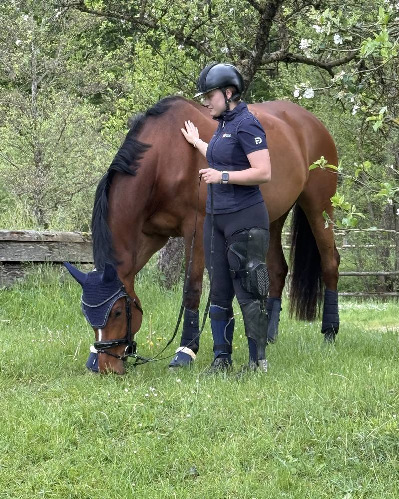
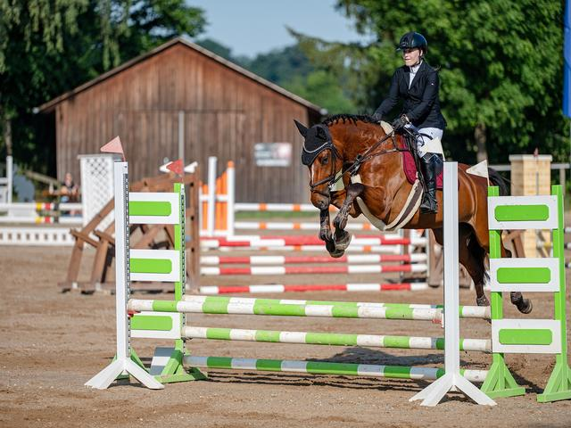
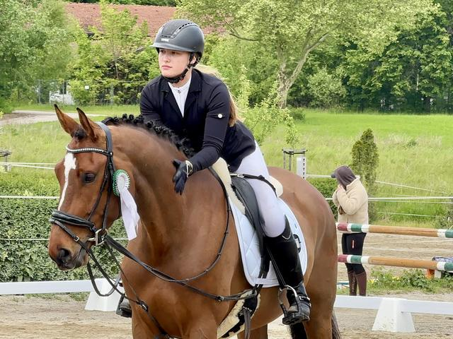
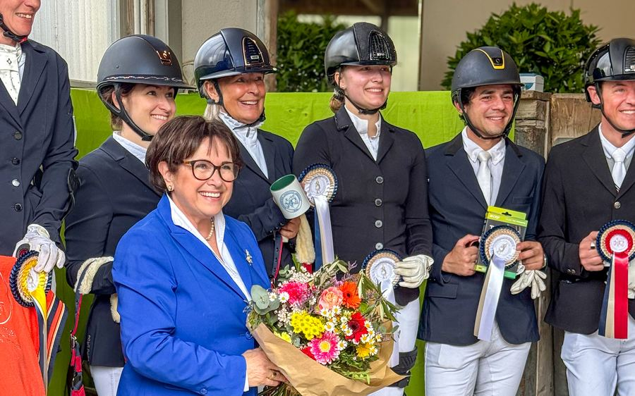

Vertrauen ist stärker als jede Grenze
Ich bin Sarah Philine Koch, Para-Reitsportlerin — aktiv in der Para-Dressur im Grade III und mit wachsendem Comeback im Springsport. Das hier ist die Geschichte einer Reiterin, die vieles verlor und mit ihrer Stute My Milou einen neuen Weg fand — leise, ehrlich und ohne Umwege über die eigene Schwäche.


Eine Verbindung, die trägt
Seit der Geburt meiner Stute My Milou im Jahr 2020 verbindet uns eine Partnerschaft, die weit über den Sport hinausgeht. Schon als Fohlen war klar, dass My Milou etwas Besonderes ist: sensibel, klug und mit einem großen Herzen.
Was als eines von mehreren Pferden in meiner Zucht begann, wurde zur wichtigsten Beziehung meines Lebens — und, wie sich später zeigen sollte, zu der Konstante, die alles trug, als für mich kaum noch etwas selbstverständlich war.
Milou spürt, wenn es mir nicht gut geht — sie reagiert feinfühliger, trägt mich, gibt mir Halt. Wir verstehen uns ohne Worte. Sarah Philine Koch
Ein neues Kapitel, geschrieben mit Mut
Ich war viele Jahre erfolgreiche Springreiterin bis zur mittleren Klasse und widmete mich parallel der Zucht von Sportpferden. Mehrere meiner Zuchtpferde sind heute erfolgreich im Sport und in der Zucht unterwegs — ein Beweis für mein feines Gespür und meine Liebe zur Pferdezucht.
Im November 2022 veränderte eine schwere gesundheitliche Krise, die im zeitlichen Zusammenhang mit einer Impfung auftrat, mein Leben von Grund auf. Es folgte eine lange, harte Zeit: mehrere Blutvergiftungen, zwei Jahre im Rollstuhl und eine Phase künstlicher Ernährung. Dank moderner Hightech-Orthesen und konsequentem Training kann ich heute die meisten Strecken wieder gehen. Bis heute lebe ich mit bleibenden körperlichen Einschränkungen — unter anderem einer Halbseitenlähmung, einer Fußheberschwäche und CRPS in beiden Beinen —, die ich mit bemerkenswerter Disziplin in meinen Alltag integriert habe.
Was zunächst wie das Ende meiner Reitkarriere aussah, wurde zum Anfang eines neuen Kapitels: Ich fand meinen Weg in den Para-Dressursport, wo feine Hilfen, Balance und Vertrauen wichtiger sind als körperliche Kraft — und wo meine Verbindung zu My Milou zur eigentlichen Stärke wurde.


Und die Geschichte ist noch nicht zu Ende geschrieben: Parallel zu meinem Para-Dressur-Programm im Grade III kämpfe ich mich seit einiger Zeit langsam auch wieder in den Springsport zurück — Schritt für Schritt, mit demselben Mut und derselben Geduld, die schon meinen Weg zurück in den Sattel geprägt haben. Heute gehören beide Disziplinen zu meinem Weg im Pferdesport.
Sportliche Ergebnisse
Sarah Philine startet mit ihrer Stute My Milou in der Para-Dressur, Grade III. Die bisherigen Platzierungen:
Zwei Dressursiege
Zwei Siege in Dressurwettbewerben mit einer Wertnote von 8,0 sowie zahlreiche weitere Platzierungen.
Bayerische Meisterschaft 2026
Gesamtwertung Grades I–III bei der Bayerischen Meisterschaft.
Grade III · 2026
Einzelwertung Grade III bei der Bayerischen Meisterschaft 2026.
Para-Deux Cup 2026
Drei Team-Platzierungen im Para-Deux Cup 2026 — einer bundesweiten Turnierserie, in der ein Parareiter und ein Reiter ohne Handicap gemeinsam antreten: 3. Platz in Landshut, 5. Platz in Brünst, 7. Platz auf Gut Kerschlach. Bericht des Fördervereins für Paradressur in Süddeutschland
Aachen & Deutsche Meisterschaft
Ein Start in Aachen und die Teilnahme an der Deutschen Meisterschaft sind das erklärte nächste Ziel.

Warum ich meine Geschichte öffentlich mache
Angefangen hat alles mit dem Wunsch, ehrlich zu erzählen, wie es wirklich ist — und anderen Reiterinnen damit Mut zu machen.
Dabei kommen bei mir drei Perspektiven zusammen, die man selten gemeinsam findet: die einer Turnierreiterin, die einer Creatorin — und die einer Frau, die gelernt hat, mit Einschränkungen sichtbar zu sein, statt sich zu verstecken.
Daraus entstehen Inhalte und Kooperationen, die nicht auf schnelle Reichweite zielen, sondern auf echte Verbindung — zu meiner Community genauso wie zu den Marken, mit denen ich arbeite.
Worauf ich bei jeder Zusammenarbeit achte
Reichweite lässt sich kaufen. Vertrauen nicht. Deshalb bleiben drei Dinge für mich unverhandelbar:
Authentizität
Inhalte spiegeln echte Erfahrung wider — im Stallalltag ebenso wie im Turniersport.
Fachwissen
Ausbildung und Pferdesport werden fundiert und verantwortungsvoll dargestellt.
Community
Der Austausch mit der Reitsport-Community steht im Zentrum jeder Content-Strategie.
Sorgfalt
Tierwohl und ein respektvoller Umgang mit dem Pferd sind nicht verhandelbar.
Wohin die Reise geht
Sportlich habe ich ein klares Ziel vor Augen: der Sprung zur Deutschen Meisterschaft und ein Start in Aachen, einem der bedeutendsten Turnierplätze im Pferdesport.
Ich habe in Milou mein Seelenpferd gefunden. Sie ist mein größtes Glück — und mein Weg zurück ins Leben. Sarah Philine Koch